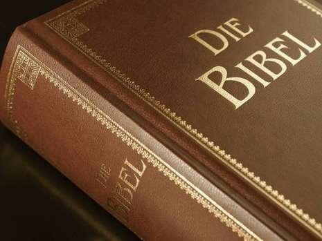

Warum Lesen Wir die Bibel?
Ein Nachfolger Jesus, ist eine Person die glaubt, daß Jesus Christus der Sohn Gottes ist, und die Ihn als Retter angenommen hat, und entschieden hat, das sich Leben zu leben, indem sie Jesus und seinen Plan für unser Leben folgt.
Nachfolger Jesus glauben, daß die Bibel Gottes Botschaft an die Menschheit ist.
Sie wissen, wenn sie wirklich Gott in der persönlichen Weise kennen, die er für uns bestimmt hat, sie die Bibel lesen müssen.
Um wirklich ein Anhänger Jesus zu sein, das heißt, um zu leben, wie Er lehrte, als Er hier auf Erden lebte, wir müssen die Bibel lesen. Wir müssen wissen, warum wir glauben Jesus war der Sohn Gottes und wir müssen über die Ereignisse wissen, die dazu geführt haben, daß Gott Ihn auf Erden gesendet, um unser Retter zu sein.